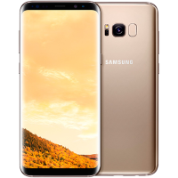

TheBest Phone.Ru
Описание товара
Это крутой телефон Samsung Это крутой телефон Samsung Это крутой телефон Samsung Это крутой телефон Samsung Это крутой телефон Samsung Это крутой телефон Samsung Это крутой телефон Samsung Это крутой телефон Samsung Это крутой телефон Samsung Это крутой телефон Samsung Это крутой телефон Samsung Это крутой телефон Samsung Это крутой телефон Samsung Это крутой телефон Samsung Это крутой телефон Samsung Это крутой телефон Samsung Это крутой телефон Samsung
Характеристики товара
- Процессор: 2350 Мгц (8-ядерный), граф.процессор
- Память: 64 Гб + 256 Гб, 4 Гб RAM, microSDXC, microSDHC
- Платформа: Android 7.0
- Аккумулятор: 3000 мА*ч Li-Pol, 23 ч разг.(GSM), 23 ч разг.(WCDMA)
- Экран: 5.8", сенсорный, 2960x1440, емкостный, Super AMOLED
- Камера: 12 мпикс, 4619x2598, вспышка 2-светодиода
- Вид: Моноблок, 155 г, 148.9x68.1x8 мм
Цена: 1250 $
Подробное описание товара
Samsung Galaxy S8 – флагман 2017 года с изогнутым экраном Infinity Display диагональю 5.8-дюймов и разрешением 2960x1440 пикселей. Вся фронтальная панель защищена стеклом Gorilla Glass последнего поколения, а соотношение экрана к корпусу достигает 86.3%. Сверху над дисплеем разместилось небывалое ранее количество сенсоров, включая датчик света, приближения, сканер радужной оболочки глаза и камера с автофокусом.
Внизу под экраном нет ничего: механическая кнопка "Домой" превратилась в виртуальную, а сенсор отпечатков перекочевал на тыльную сторону корпуса и разместился рядом с объективом основной камеры. Согласно официальным характеристикам, Galaxy S8 получил новый 8-ядерный процессор Exynos 8895, который работает в тандеме с графикой Mali G71 MP20, а также 2 ГБ оперативной памяти и 64 ГБ постоянной типа UFS 2.1. Как и в Galaxy S7, здесь присутствует слот для карты памяти объемом до 256 ГБ.
Корпус по-прежнему водонепроницаемый и пылезащищенный. По словам руководителей Samsung, S8 сертифицирован по стандарту IP68, который подразумевает погружение под воду на глубину 1.5 метра на протяжении 30 минут. Производитель не отказался от 3.5 мм аудиоразъема, и даже комплектует свой смартфон наушниками от AKG, которые можно приобрести отдельно за 100 долларов.
Вы можете выбирать между черным, синим, золотым, серым и серебристым цветами.